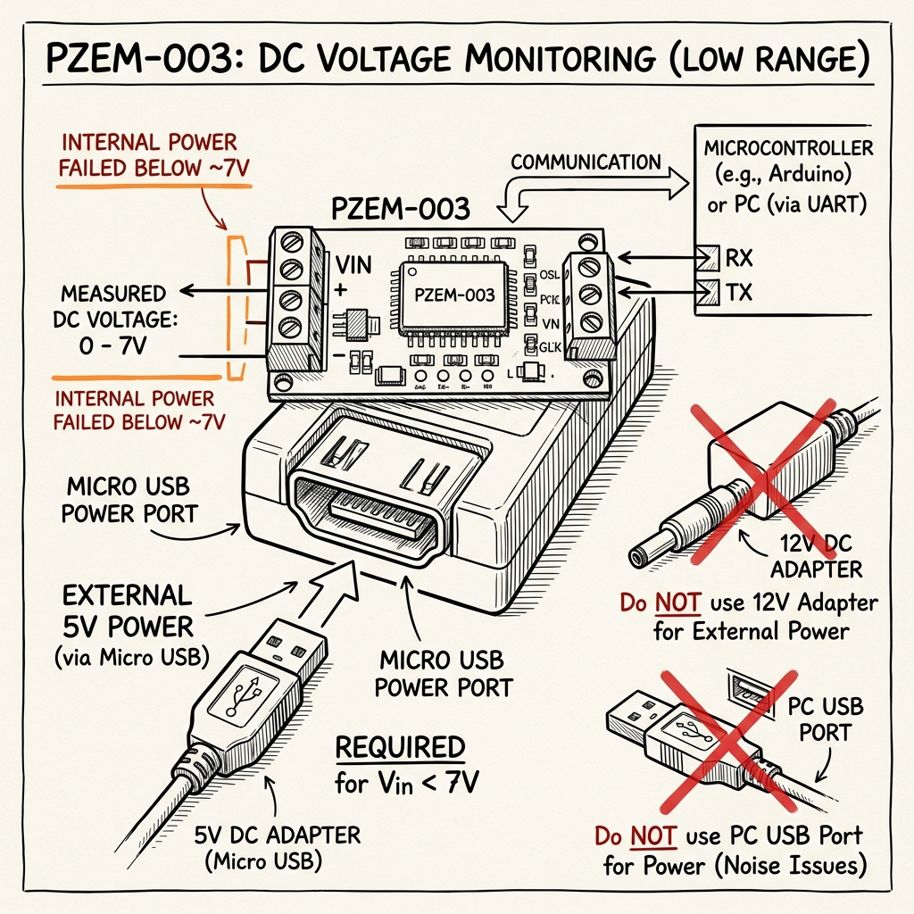
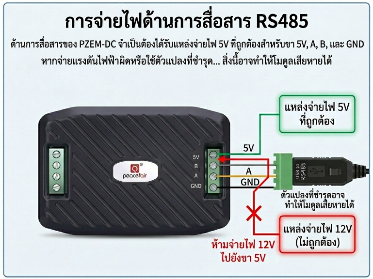
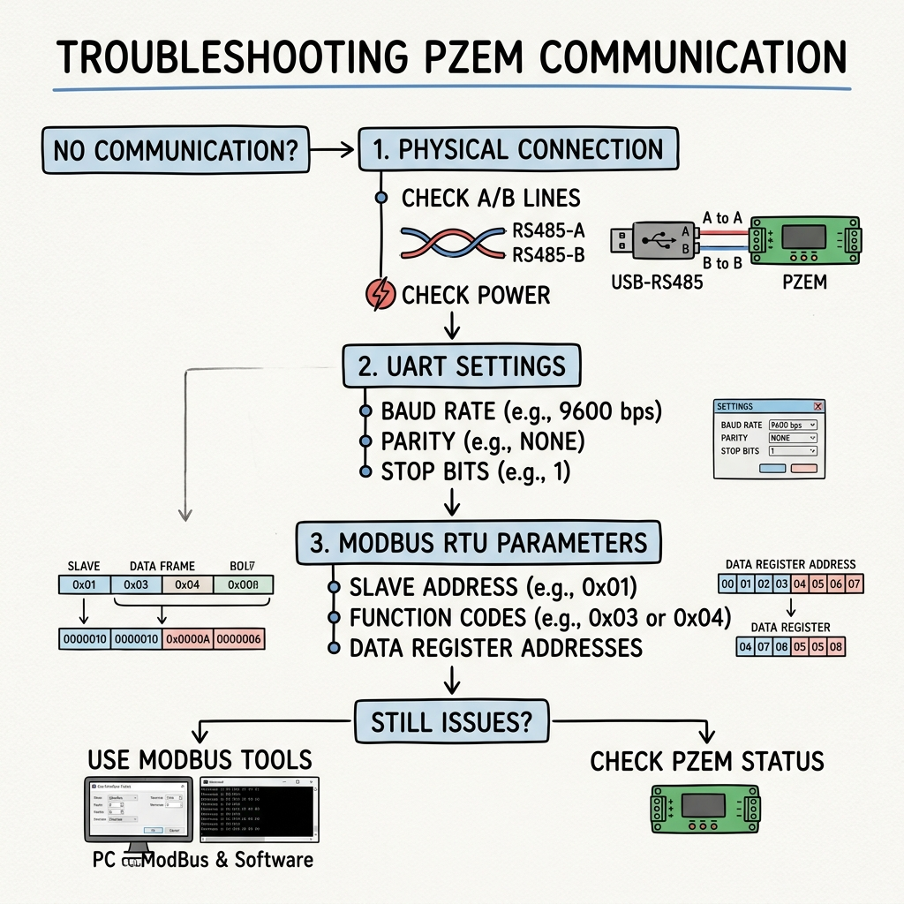
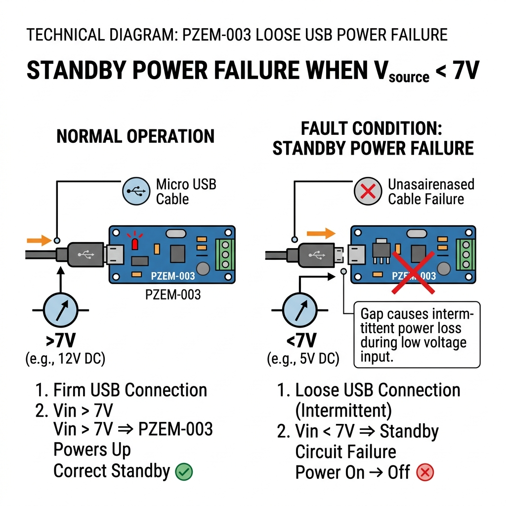

สรุปข้อควรระวังและข้อแนะนำในการใช้งาน PZEM DC
⚠️ ข้อควรระวัง (Cautions)
1. ขา 5V ฝั่งสื่อสารต้องใช้ไฟ 5V เท่านั้น ห้ามจ่าย 12V
ฝั่งสื่อสาร RS485 ที่มีขา 5V, A, B และ GND ต้องใช้แหล่งจ่าย 5V ภายนอกตามคู่มือเท่านั้น หากเผลอจ่ายแรงดันสูงกว่า เช่น 12V ลงที่ขา 5V ของฝั่งนี้ อาจทำให้วงจรภายในโมดูลเสียหายได้ ส่วนพอร์ต Micro USB เป็นอีกส่วนหนึ่งที่ใช้สำหรับจ่ายไฟเลี้ยง 5V เมื่อแรงดันที่วัดต่ำกว่า 7V จึงไม่ควรนำสองกรณีนี้มาปะปนกัน

2. การตรวจสอบอุปกรณ์แปลงสัญญาณ RS485-to-USB
ต้องตรวจสอบอุปกรณ์แปลงสัญญาณ RS485-to-USB ให้อยู่ในสภาพปกติก่อนใช้งานจริง จากการทดลองพบว่า: เมื่อใช้อุปกรณ์แปลงสัญญาณที่ชำรุด อาจเกิดการดึงไฟหรือจ่ายไฟผิดปกติ จนทำให้ไอซีภายใน PZEM เสียหายได้ ดังนั้นก่อนเชื่อมต่อควรตรวจสอบตัวแปลง สายสัญญาณ และแรงดันไฟเลี้ยงให้ถูกต้องและปลอดภัย

3. พิกัดกระแส (Current Limit)
ต้องตรวจสอบพิกัดการใช้งานไม่ให้เกิน 10A เนื่องจาก PZEM-003 เป็นรุ่นที่มี Built-in Shunt และรองรับกระแสได้สูงสุดประมาณ 10A หากต้องการวัดกระแสที่มากกว่านี้ควรเลือกใช้ PZEM-017 ซึ่งรองรับการใช้งานร่วมกับ External Shunt ได้เหมาะสมกว่า

💡 ข้อแนะนำ (Recommendations)
1. การสื่อสารและการตั้งค่า Serial
หากอ่านค่าไม่ได้ ควรตรวจสอบทั้งการต่อสายสื่อสารและการตั้งค่าการสื่อสารตามคู่มือ ให้ตรวจสอบว่าสาย A และ B ต่อถูกต้อง ไม่หลวม และตรวจสอบค่าการสื่อสาร เช่น Baud rate, Data bits, Parity และ Stop bits ให้ตรงตามคู่มือ เพราะค่าที่ใช้ได้อาจแตกต่างกันแม้เป็น PZEM-003 เหมือนกัน หากมาจากคนละล็อตหรือคนละช่วงการผลิต ก็อาจใช้ค่าการสื่อสารไม่เหมือนกันได้ จึงควรอ้างอิงคู่มือของอุปกรณ์ที่ใช้งานจริงเป็นหลัก

2. ความแน่นของสายไฟเลี้ยง Micro USB
ควรตรวจสอบความแน่นของสาย Micro USB ที่ใช้เป็นไฟเลี้ยงสำรอง โดยเฉพาะกรณีที่แรงดันต้นทางต่ำกว่า 7V จากการทดลองพบว่า: หากสายหลวม หรือไฟเลี้ยง 5V ไม่เสถียร อาจทำให้โมดูลไม่ทำงานหรืออ่านค่าไม่ออกได้

⭐ สรุปประเด็นหลัก
- ขา 5V ฝั่งสื่อสารต้องใช้ 5V เท่านั้น ห้ามจ่าย 12V
- ห้ามใช้อุปกรณ์แปลง RS485-to-USB ที่ชำรุด
- PZEM-003 ใช้ได้ไม่เกิน 10A (หากเกินกว่านั้นใช้ PZEM-017)
- อ่านค่าไม่ได้ ให้เช็ก A/B และ Serial settings ตามคู่มือ
- Micro USB หลวม อาจทำให้โมดูลไม่ทำงาน